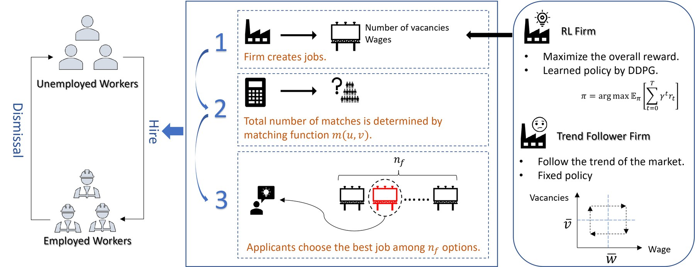

This paper proposes a novel framework for applying reinforcement learning (RL) within agent-based models (ABMs) to study labor market dynamics in labor economics. ABMs provide a flexible platform for simulating economic systems, particularly by modelling heterogeneous agents and their complex interactions, which effectively capture non-linear and emergent phenomena in labor markets. We extend an existing labor market model by integrating it into an RL framework, using the Deep Deterministic Policy Gradient (DDPG) algorithm to train agents to maximize profits, and comparing their performance with bounded-rational agents governed by predefined policies. Our findings show that RL agents, depending on the level of competition and rationality in the market, spontaneously learn distinct strategies, which significantly impact outcomes, such as unemployment and wage distribution. This work underscores the importance of ABMs in analyzing labor market dynamics and illustrates how RL-equipped agents can learn optimal strategies in evolving economic environments, offering a robust tool for policy analysis and exploring the complexities of labor market behavior.
Model
Workers move between unemployment and employment through hiring and dismissal. In each step, every firm sets its number of vacancies and a wage factor that places its wage between the unemployment benefit and the value a worker adds. The number of hires follows a matching function m(u, v) of unemployed workers and vacancies, and each matched job seeker chooses the highest-wage job among nf randomly drawn vacancies.
Two types of firms compete in the market. RL firms observe the market state and learn their vacancy and wage policy with DDPG to maximize profit. Trend-follower firms use a fixed rule: they compare their wage with the market average and their hires with the expected number, and adjust either the wage or the vacancies. The parameter nf sets the level of competition between firms, or equivalently the transparency of the market for job seekers.

Figure 1. The RL-EM model. Left: worker flows through hiring and dismissal. Middle: the three steps of each period. Right: the RL firm, trained with DDPG, and the trend-follower firm with a fixed policy.
Results
One RL firm
With one RL firm and four trend followers, the RL firm learns a different strategy at each level of competition.
nf
Strategy
Learned behaviour
1
Sweatshop
Posts many vacancies at the lowest wage and employs most of the workforce.
2
Bait-and-switch wage
Offers a high wage to attract workers, then lowers the wage and stops hiring.
20
Scarcity-driven
Posts few vacancies, so that jobs are scarce and are filled even at low wages.
For workers, limited competition (nf = 2) gives the best outcome, with both employment and wages high. Without competition the RL firm exploits workers, and under near-full competition it suppresses competition by keeping jobs scarce.
Several RL firms
When several firms learn, the outcome depends on whether they share a policy. Firms that share one policy behave like a cartel and post many vacancies at low wages. Firms with independent policies split into groups. At nf = 1 all five firms converge to the sweatshop strategy. At nf = 2 one firm keeps a high wage and most of the workforce, one firm follows a bait-and-switch pattern, and the others stop hiring.
Figure 2. Five RL firms with independent policies at nf = 1 and nf = 2. Top: employed workers and average wage in the market. Bottom: vacancies, wages, employed workers and rewards of each firm over time.